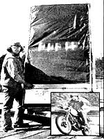

Some folks have a knack for just tackling a problem by the seat of their pants and coming up with an answer, and Jim Langley of Heflin, Alabama seems to be one of those people. Jim picked up a copy of the January/February 1979 issue of MOTHER (which featured a Plowboy Interview with Lance Crombie, the by-now-famous Minnesota farmer who was producing his own home fuel), and the explanation of Lance's simple solar still really sparked the Alabamian's interest.
So, without any further ado, Langley sat himself down and built his own version of a solar distillation apparatus, using Lance's description-and a little common sense-as a guide. "The idea came right out of y'all's magazine. Just from reading what Crombie had to say-and adding a few details from your solar collector articles-I put together my still. Of course I just guessed at some of the dimensions ... but I must've done something right, 'cause I'm getting fuel strength alcohol on the first run!"
Basically, Jim's still is a 4' X 8-1/2' tray-5 1/4" deep-that's backed with a full sheet of 3/4" plywood and faced with a piece of plexiglass. Inside this bin-at its midpoint-is a 1" X 4" board ... fastened horizontally to the sides and rear of the box. (This method of construction provides for a gap of an inch or so between the glazing and the horizontal shelf.)
The plywood covering at the rear of the tray has an 8" X 8" access door cut into it, positioned just above the ledge and designed so it can be tightly sealed. The plexiglass sheet itself is also rendered completely airtight with silicone sealant, and it's fastened to the box so that the transparent material's lower edge rests inside a 12" X 48" board mounted at the foot of the tray. (This plank serves as part of the alcohol collection bin at the base of the upright still.) A spigot is then installed at the tray's lowest point and used to drain off the distilled product at regular intervals.
First, Jim built a frame to support the still in a partially upright position . . . he feels that an angle of between 57° and 62° is best in his part of the Cotton State, but he suggests that anyone duplicating his efforts elsewhere recalculate this angle by merely adding 25° to their own latitude.
After positioning the still at the correct angle and facing it toward the sun, the Alabamian opens the door at the rear of the box and places five two-liter, plastic soft-drink containers-filled with his mash solution-on the horizontal shelf within the still (he's cut, the top three inches or so off the neck of each bottle to provide a wider opening).
Then Jim just goes about his daily routine and lets Ol' Sol shine on. The theory is that-since alcohol is driven out of the mixture at a lower temperature than is water-the fuel rises in a vapor, condenses on the inside surface of the upper portion of plexiglass facing, and runs down into the basin at the bottom of the still . . . to be tapped off later.
Apparently, J.L.'s distillery has produced alcohol pure enough to run a variety of internal combustion engines. Jim says he's operated his motorcycle on a gasoline/alcohol mixture, but uses pure ethanol fuel in his lawn mower. "I run a mix of six gallons of alcohol to four gallons of gasoline in my bike, but I've got to add oil to the fuel since the cycle has a two-stroke engine. On my lawn mower-which operates just fine on straight alky-I simply drilled the main metering jet out another .002", adjusted the air screw on the carburetor, and yanked the starter cord . . . it purred like a kitten!"
Jim admits that he hasn't made a large quantity of "farmer's fuel" in the several months he's been experimenting, but only because alcohol research is just a hobby for him. "I make a few gallons when I can ... since I enjoy puttering around with gasoline engines. If I had a lot of alcohol, I might even consider running my car on pure brew . . . but right now, I'm playing around just for fun."
What's Important, though, is that although Jim might be "just foolin' around" he is helping to demonstrate that we don't have to depend upon imported, nonrenewable sources to meet our liquid fuel needs.
Of course, Langley's design may well be too crude-and too dependent upon uninterrupted sunshine-to be considered a reliable source of backyard power. (it was such problems that led MOTHER's researchers to develop a more efficient and productive type of still.) But-with the need for a gasoline substitute growing more and more desperate by the day-those of us who are experimenting with home-produced ethanol can't afford to discount any ideas that might help make agriculturally produced fuel more available.
All successful ethanol production begins with a starch-rich concoction which converts, easily and thoroughly, to a yeast culture's favorite food: fermentable sugars. And-when the fungi find a generous supply of their preferred fare-they reward the distiller with a high rate of alcohol yield. MOTHER included several of these mashing recipes in Issue No. 57 . .. all of them adapted from beverage "alky" formulas. Since then, our researchers have been busy mashing, fermenting, and distilling. Their recent experience-combined with some expert advice on fuel-grade alcohol preparation-has resulted in the following technique ... one which returns a maximum volume of flame-grade juice.
Start with a bushel (56 pounds) of well-milled corn and 30 gallons of water adjusted to a pH factor of 7. (Measure the pH with litmus paper and adjust the factor by adding agricultural lime to raise the number or citric acid to reduce the figure.) Slowly add the water to the corneal ... stirring constantly to prevent lumping. Then-once the solution is well mixed-add two ounces of Taka-Therm enzyme (available from MOTHER) and heat the mash slowly (with continuous agitation) from room temperature to about 160°F in one hour, (Taka-Therm helps keep the starches from gelling, but-if you heat the mash too quickly-the enzyme won't get a chance to work. If you do make this error, stop agitating and let the goo cool until it reliquefies.) Continue to heat the concoction to boiling point . . . then shut off the heat. Stir the mixture occasionally while it cools.
Once the temperature drops to about 140°F, check the pH factor again and adjust to 4 (adding citric acid if necessary). Then put in two ounces of Diazyme (a second enzyme, also available from MOTHER), which helps break down the starch chain molecules and speeds the conversion to fermentable sugars. Now let your mash cool overnight. By the following morning the temperature should be in the 70-80°F range ... which is the correct environment for yeast feeding.
MOTHER's research staffers have gotten the best results with two ounces of moist, caked baker's yeast. Within a few hours of adding the yeast, you should begin to see the hungry plants doing their job. When the "brew" starts bubbling, cover the barrel (you can use a fermentation lock for this stage) and just let it rest quietly while the yeast "chows down".
Fermentation should be completed in four to six days. You can tell that your mash is "ripe" when active bubbling stops and the cap of "corny" material sinks. Once the yeast is spent, you must put the mash to use right away . . . before fermentation heads on to the next (undesirable) stage.
Finally, separate the solid material from the liquid mash mixture by first skimming the fluid from the top and then squeezing the solids inside a burlap bag . . . over a milking funnel and a pail. Be sure to set the leftover grains out to dry promptly, or they will turn bad. These "distiller's dried grains and solubles" (DDGS) will become a key part of the economics of home alcohol production. The cornmeal by-product is nearly 30% protein and makes excellent livestock feed.
|
 Jimmy Langley poses with his still...then puts ethanol to use! |
|
|